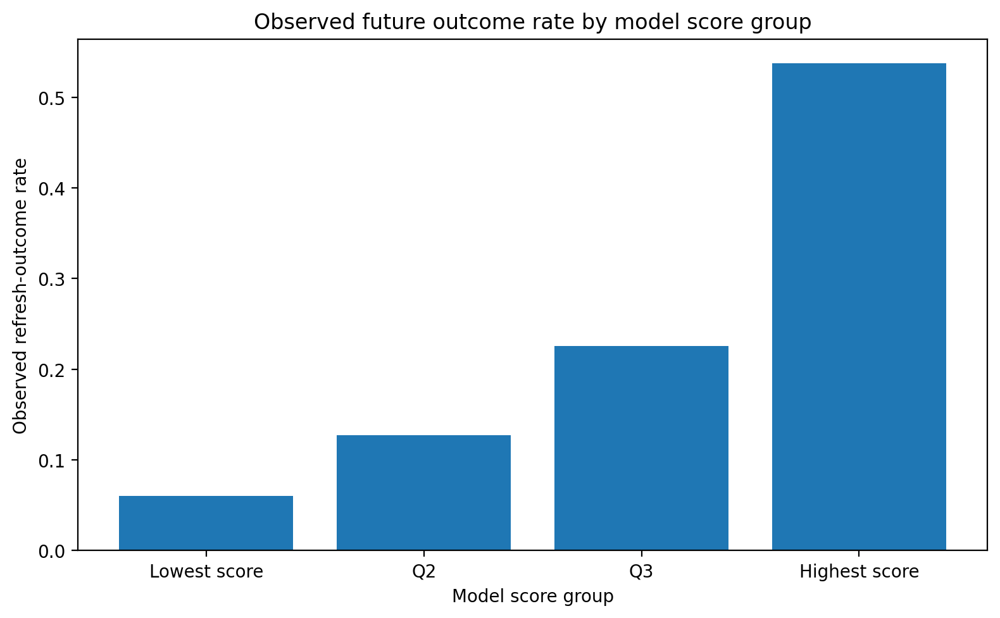

P@20
0.65
baseline 0.40
FlyRank ML Internship · Capstone · Machine Learning Track
A time-aware ranking approach for prioritizing human content review
Random Forest vs. Week-4 baseline, evaluated on the same held-out March → April future test set (base rate 23.74%).
Abstract
This study asks whether March-only, non-label-derived search and engagement signals can rank content that subsequently meets a predefined refresh-review condition in April. Using the FlyRank internship warehouse, the analysis constructs January→February and February→March development observations and evaluates the selected model on the held-out March→April future window. A 26-feature Random Forest was selected using client-grouped internal validation and then evaluated against the fixed Week-4 baseline on the same future test set. On the March→April test set, the Random Forest achieved Precision@20 of 0.65, Precision@50 of 0.70, Precision@100 of 0.76, and Average Precision of 0.4838, compared with 0.40, 0.52, 0.54, and 0.380689 for the baseline. The result is directional, observational decision-support evidence for prioritizing human content review, not evidence that refreshing content causes improvement and not a prediction of Google's ranking algorithm.
1
Content teams may have more pages available for investigation than they can review at the same time. This creates a prioritization problem: which pages should a human content or SEO reviewer inspect first?
This capstone investigates the following research question:
Can March-only, non-label-derived search and engagement signals rank content that subsequently meets a predefined refresh-review condition in April?
The intended output is a ranking and triage system, rather than an automated publishing or content-management system. The study evaluates whether historical signals can provide useful prioritization evidence while explicitly avoiding claims about Google's ranking algorithm or causal effects of refreshing content.
The primary hypothesis was that pages with weaker search visibility or weaker engagement-related signals may be more likely to meet the defined future refresh-review outcome — treated as an empirical hypothesis, not an assumption that any individual signal causes the outcome.
2
The analysis uses the FlyRank internship warehouse: hf://datasets/FlyRank/internship-warehouse, table fact_content_daily_performance. The underlying daily grain is approximately report_date × client × content.
Warehouse verification: 78,835,655 rows, minimum date 2025-01-27, maximum date 2026-06-30. A grain check detected no duplicate observations at the expected daily grain.
The study uses month-to-month observations so that the information used to rank content precedes the outcome being evaluated.
| Feature month | Outcome month | Role |
|---|---|---|
| January 2026 | February 2026 | Model development |
| February 2026 | March 2026 | Model development |
| March 2026 | April 2026 | Future test |
Panel sizes: January→February 110,867 observations; February→March 134,238; March→April 158,549.
The March→April evaluation population: negative outcome 120,913; positive outcome 37,636; positive-class base rate 23.74%.
The modeling population consists of content with usable search data and a matching observation in the following month. Pages without a matching future observation are not represented in the evaluation, so results describe the observed month-to-month panel rather than every page in a production content inventory.
The final model excludes future-window variables, direct components of the target definition, client identifiers, content identifiers, and data unavailable before the prediction month. Client and content identifiers were used only for joins and grouping, never as predictive features.
3
The study uses an operational research label, refresh_outcome. A page receives refresh_outcome = 1 when: (1) it has at least 100 impressions in the feature month; (2) it has measurable CTR in the feature month; and (3) its following month's CTR is at least 20% lower than the feature-month CTR. For the final evaluation, March provides the feature information and April provides the future outcome. This is deliberately a research outcome, not a universal definition of content decay.
The final model contains 26 features, including search-position information, GA4 pageviews/sessions/users, engaged sessions, total engagement time, traffic-channel sessions, AI-referral signals, scroll activity, GA4 availability, organic-session share, engagement rate, average engagement time per session, AI-session share, and scroll events per session.
The following fields were explicitly excluded from the final feature set: gsc_impressions, gsc_clicks, ctr, ctr_next, refresh_outcome, ctr_change_pct, client_hash_id, content_hash_id.
Before fitting the final model, the feature set was checked against the operational outcome definition and the temporal setup. ctr_next, ctr_change_pct, and refresh_outcome were excluded because they encode future/outcome information directly. Current-month fields used to construct the outcome (gsc_impressions, gsc_clicks, ctr) were also excluded from the final predictive feature set. The final model therefore uses only features available from the feature month and does not use the following month's outcome when generating a ranking.
Two models were considered: Logistic Regression (median imputation, standardization, logistic regression) and Random Forest (median imputation, 300 trees, max depth 6, minimum 10 samples per leaf, random state 42, parallel processing).
Model selection was performed before evaluating the future test period, using a client-grouped internal validation split: development 200,965 rows / 36 clients; validation 44,140 rows / 10 clients; no client overlap.
| Model | Internal validation AP |
|---|---|
| Logistic Regression | 0.353227 |
| Random Forest | 0.367495 |
The Random Forest was selected on Average Precision. The March→April future test set was not used for model selection.
Training used January→February and February→March; the future test used March→April. The April outcome was not used for model fitting or feature selection.
The study evaluates ranking quality — Precision@20, Precision@50, Precision@100, and Average Precision — reported alongside the positive-class base rate. Precision@K answers: among the top K pages selected for review, what proportion meet the predefined future outcome?
4
The final model and baseline were evaluated on the same March → April future test set.
| Model | P@20 | P@50 | P@100 | Avg. Precision | Base rate |
|---|---|---|---|---|---|
| Week-4 Baseline | 0.40 | 0.52 | 0.54 | 0.380689 | 0.2374 |
| Random Forest | 0.65 | 0.70 | 0.76 | 0.4838 | 0.2374 |
Relative to the 23.74% positive-class base rate: P@20 ≈ 2.74×, P@50 ≈ 2.95×, P@100 ≈ 3.20×. These figures describe ranking concentration — they should not be read as evidence that the model causes pages to improve.
The test population was divided into four model-score groups:
| Score group | Pages | Observed positive rate |
|---|---|---|
| Lowest score | 40,391 | 6.04% |
| Q2 | 38,894 | 12.76% |
| Q3 | 39,653 | 22.57% |
| Highest score | 39,611 | 53.74% |
The observed positive rate increased from 6.04% in the lowest-score group to 53.74% in the highest — evidence that the ranking concentrates the defined outcome toward higher model scores in the evaluated test population.

5
The analysis observes naturally occurring search and analytics behavior. It does not randomly assign content changes and cannot establish that refreshing a page causes better search performance.
The refresh_outcome label — minimum feature-month impressions, measurable feature-month CTR, at least a 20% subsequent CTR decline — is an operational research label, not a universal definition of content decay.
The evaluation requires a matching feature-month and outcome-month observation; pages without one are excluded.
The final evaluation uses one future month-to-month window. Additional future windows are required before making stronger claims about stability.
Clients differ in content, history, analytics coverage, and search behavior. A model that performs well in this dataset may not transfer directly to another portfolio.
GA4 availability differs across clients and time, so missingness and measurement availability can affect observed signals.
The study does not compare randomized refreshed and non-refreshed pages and cannot estimate the causal effect of refreshing content.
The model ranks outcomes in the evaluated FlyRank dataset. It does not predict or reverse-engineer Google's ranking algorithm.
6
The model output is converted into a human-review queue:
These pages appear worth reviewing first because they received higher model scores under the tested methodology.
| Priority | Rule | Recommended treatment |
|---|---|---|
| Priority human review | Top 10% by model score | Review first |
| Review if capacity allows | Top 25%, excluding top 10% | Batch review |
| Monitor | Remaining pages | Revisit later |
Score thresholds are relative triage thresholds, not causal rules.
| Reason code | Interpretation |
|---|---|
TOP_MODEL_PRIORITY | Very high model score |
HIGH_MODEL_PRIORITY | High model score below the top tier |
WEAKER_SEARCH_VISIBILITY | Search position at or beyond the training-period 75th percentile |
LOW_ORGANIC_ACTIVITY | Organic sessions at or below the training-period 25th percentile |
LOW_ENGAGEMENT_SIGNAL | Engagement rate at or below the training-period 25th percentile |
LIMITED_GA4_COVERAGE | GA4 data unavailable |
MODEL_RANK_ONLY | No additional reason-code condition met |
Before acting on a high-ranked recommendation, a human reviewer should check:
Workflow: model ranking → human review → contextual decision → optional action → monitor outcome.
Human judgment remains responsible for the actual editorial action.
The study contains no production cost, revenue, or editorial labor estimates, so no fabricated monetary value is assigned. The ranking instead allocates limited human attention: higher-priority pages reviewed first, moderate-priority pages reviewed if capacity allows, lower-priority pages monitored and revisited later.
The ranking should be re-evaluated whenever a new labeled month becomes available — for example if Average Precision falls materially below the reference evaluation, Precision@K stops providing useful concentration relative to the base rate, the model no longer outperforms the fixed baseline, feature distributions shift substantially, or the outcome definition changes. Retraining should occur only after a new labeled window is available, and a candidate model should again pass the same leakage audit and validation procedure before adoption. These are proposed monitoring rules, not calibrated production thresholds.
7
The analysis is implemented in work/notebooks/capstone.ipynb, designed to run independently rather than relying on variables from previous notebooks.
The executed notebook produces:
work/metrics/capstone_metrics.jsonwork/outputs/capstone_ranked_action_queue.csv (158,549 rows; intentionally excluded from Git per the repository's data-file policy)work/outputs/capstone_summary.jsonwork/figures/capstone_score_quartiles.pngThe notebook's final artifact checks verified that required generated artifacts existed and were non-empty, and its final self-check returned PASS for the major reproducibility and methodological checks.
Repository: Wajiha-Waqar/FlyRankInternship
Notebook: capstone.ipynb
8
This work was completed as part of the FlyRank ML Internship and uses the FlyRank internship dataset.
Built on the FlyRank ML Internship dataset. FlyRank
This capstone developed a leakage-aware, time-aware content-refresh opportunity ranking using real FlyRank search and analytics data. The final feature set excludes variables that directly participate in the target definition, addressing the label-derived leakage identified during earlier validation work.
The selected Random Forest produced stronger observed ranking metrics than the fixed baseline on the same March → April future test set, including P@20 of 0.65, P@50 of 0.70, P@100 of 0.76, and AP of 0.4838.
The most defensible interpretation is decision support: the ranking helps a human reviewer decide where to look first. It does not demonstrate that refreshing content causes better performance, and it does not predict Google's ranking algorithm.